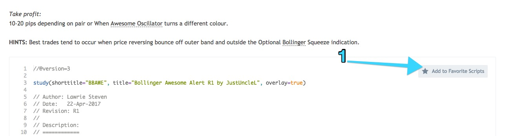
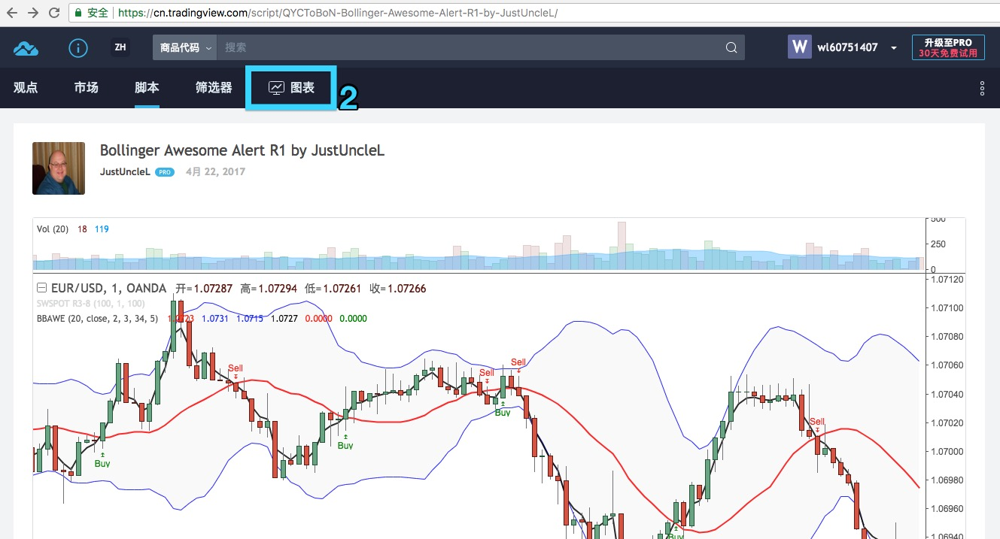
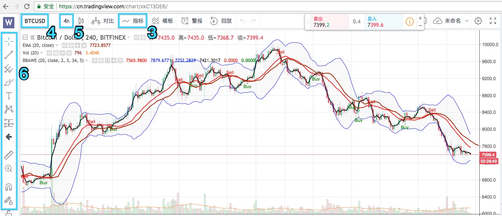

<!DOCTYPE html>
<html lang="en">
    <head>
        <meta charset="utf-8">
        <meta http-equiv="X-UA-Compatible" content="IE=edge">
        <meta name="viewport" content="width=device-width, initial-scale=1.0">
        
        
        
        <link rel="shortcut icon" href="../../img/favicon.ico">
        <title>策略学习 Bollinger Awesome Alert R1 - 40+ Codeing for life！</title>
        <link href="../../css/bootstrap-custom.min.css" rel="stylesheet">
        <link href="../../css/font-awesome-4.5.0.css" rel="stylesheet">
        <link href="../../css/base.css" rel="stylesheet">
        <link rel="stylesheet" href="../../css/highlight.css">
        <!-- HTML5 shim and Respond.js IE8 support of HTML5 elements and media queries -->
        <!--[if lt IE 9]>
            <script src="https://oss.maxcdn.com/libs/html5shiv/3.7.0/html5shiv.js"></script>
            <script src="https://oss.maxcdn.com/libs/respond.js/1.3.0/respond.min.js"></script>
        <![endif]-->

        <script src="../../js/jquery-1.10.2.min.js"></script>
        <script src="../../js/bootstrap-3.0.3.min.js"></script>
        <script src="../../js/highlight.pack.js"></script> 
    </head>

    <body>

        <div class="navbar navbar-default navbar-fixed-top" role="navigation">
    <div class="container">

        <!-- Collapsed navigation -->
        <div class="navbar-header">
            <!-- Expander button -->
            <button type="button" class="navbar-toggle" data-toggle="collapse" data-target=".navbar-collapse">
                <span class="sr-only">Toggle navigation</span>
                <span class="icon-bar"></span>
                <span class="icon-bar"></span>
                <span class="icon-bar"></span>
            </button>
            <a class="navbar-brand" href="../..">40+ Codeing for life！</a>
        </div>

        <!-- Expanded navigation -->
        <div class="navbar-collapse collapse">
                <!-- Main navigation -->
                <ul class="nav navbar-nav">
                    <li >
                        <a href="../..">Welcome</a>
                    </li>
                    <li class="dropdown">
                        <a href="#" class="dropdown-toggle" data-toggle="dropdown">Python学习 <b class="caret"></b></a>
                        <ul class="dropdown-menu">
                            
<li >
    <a href="../../Python学习/Python常用配置/">Python常用配置</a>
</li>
                        </ul>
                    </li>
                    <li class="dropdown">
                        <a href="#" class="dropdown-toggle" data-toggle="dropdown">系统配置 <b class="caret"></b></a>
                        <ul class="dropdown-menu">
                            
<li >
    <a href="../../系统配置/Docker简单入门，创建Python、Mysql开发环境/">Docker简单入门，创建Python、Mysql开发环境</a>
</li>
                            
<li >
    <a href="../../系统配置/Mac系统配置/">Mac系统配置</a>
</li>
                            
<li >
    <a href="../../系统配置/TA-Lib安装/">TA Lib安装</a>
</li>
                            
<li >
    <a href="../../系统配置/Ubuntu系统配置(虚拟机)/">Ubuntu系统配置(虚拟机)</a>
</li>
                            
<li >
    <a href="../../系统配置/使用Mkdocs、Github搭建博客/">使用Mkdocs、Github搭建博客</a>
</li>
                        </ul>
                    </li>
                    <li class="dropdown active">
                        <a href="#" class="dropdown-toggle" data-toggle="dropdown">量化交易 <b class="caret"></b></a>
                        <ul class="dropdown-menu">
                            
<li class="active">
    <a href="./">策略学习 Bollinger Awesome Alert R1</a>
</li>
                        </ul>
                    </li>
                </ul>

            <ul class="nav navbar-nav navbar-right">
                <li>
                    <a href="#" data-toggle="modal" data-target="#mkdocs_search_modal">
                        <i class="fa fa-search"></i> Search
                    </a>
                </li>
                    <li >
                        <a rel="next" href="../../系统配置/使用Mkdocs、Github搭建博客/">
                            <i class="fa fa-arrow-left"></i> Previous
                        </a>
                    </li>
                    <li class="disabled">
                        <a rel="prev" >
                            Next <i class="fa fa-arrow-right"></i>
                        </a>
                    </li>
            </ul>
        </div>
    </div>
</div>

        <div class="container">
                <div class="col-md-3"><div class="bs-sidebar hidden-print affix well" role="complementary">
    <ul class="nav bs-sidenav">
        <li class="main active"><a href="#-bollinger-awesome-alert-r1">策略学习-Bollinger Awesome Alert R1</a></li>
            <li><a href="#_1">策略信息</a></li>
    </ul>
</div></div>
                <div class="col-md-9" role="main">

<h2 id="-bollinger-awesome-alert-r1">策略学习-Bollinger Awesome Alert R1</h2>
<p><strong>更新时间：20180526</strong></p>
<hr />
<h4 id="_1">策略信息</h4>
<ul>
<li>来源：<a href="https://cn.tradingview.com/script/QYCToBoN-Bollinger-Awesome-Alert-R1-by-JustUncleL/">Tradingview</a></li>
<li>策略描述：详见代码部分的注释，中文部分是我加的翻译注释。</li>
<li>个人理解：这并不是一个策略，而是一个指标，也就是不包含买卖动作，虽然这个指标明确提示了Long和short。因此，这个策略没有办法进行回测。</li>
<li>
<p>该指标的使用：</p>
<ul>
<li>点击来源连接，进入Tradingview，如果没有账号，需要注册一个，然后登陆你的账号；</li>
<li>
<p>在页面的策略代码部分，可以看到一个添加到收藏的按钮'Add to Favorete Scripts'，点击它，如下图；
</p>
</li>
<li>
<p>收藏后，回到页面顶部，点击<code>图表</code>标签，如下图；
</p>
</li>
<li>
<p>进入图标页面后，点击顶部导航栏的<code>指标</code>标签(3)，出现一个<code>指标 &amp; 策略</code>的浮层页，点击左侧列表顶部的<code>收藏</code>，然后在右侧的列表内，选择并点击刚才收藏的指标'Bollinger Awesome Alert R1 by JustUncleL'；
</p>
</li>
<li>
<p>OK，指标现在应该已经出现在<code>图表</code>上了。因为Tradingview支持中文，简单炒作非常容易，上图标示的4、5、6，都是很常用的操作，顺手标示出来，4选择交易品如股票或期货，5选择K线数据频率，6是各种划线工具；</p>
</li>
</ul>
</li>
<li>
<p>指标代码分析、学习</p>
</li>
</ul>
<pre><code class="python">//@version=3

study(shorttitle=&quot;BBAWE&quot;, title=&quot;Bollinger Awesome Alert R1 by JustUncleL&quot;, overlay=true)

// Author: Lawrie Steven
// Date:   22-Apr-2017
// Revision[修订本]: R1
// Description:
// ============
// This indicator[指标] is an implementation[实现] of [the Bollinger Band][布林线] and Awesome[极好的] Oscillator[震荡器]
// scalping[倒买倒卖] system.
// [This technique[技巧] is for those who want the most simple method that is
// very effective. It is BEST traded during the busiest trading hours,
// 3am to 12am EST NY time. This method doesn't work in sideways markets, only in
// volatile trending markets.]
// [这个技巧是为那些想要的最简单的方法是非常有效的。最好的交易时间是在最繁忙的交易时间，凌晨3点到12点。这种方法在横向市场上行不通，只在不稳定的趋势市场中有效。]
//
// Time Frames: 1, 5, 10, 15 ,30 min.
// Currency pairs: majors.
//
// Other Chart indicators:
// - Add Awesome Oscillator.
// - Optionally[可选择的] Add Squeeze[挤压、压榨、佣金] Indicator.
//
// Here's the strategy:
// --------------------
// Going LONG:
// Enter a long position when the black 3 EMA has crossed up through the Bollinger red 
// middle band MA. At the same time, the Awesome should be approaching or crossing 
// it's zeroline, going up. This is indicated by &quot;Buy&quot; alert.
// [大意：做多指标，当黑色的3EMA上穿红色MA线，这是做多的指标]
//
// Going SHORT:
// Enter a short position when the black 3 EMA has crossed down through the Bollinger red
// middle band MA. At the same time, the Awesome should be approaching or crossing it's 
// zero line, going down. This is indicated by the &quot;Sell&quot; Alert.
// [大意：做空指标，当黑色的3EMA下穿红色MA线，这是做空的指标]
// 
// [Take profit][获利]:
// 10-20 pips depending on pair or When Awesome Oscillator turns a different color.
//
// HINTS[提示]: Best trades tend to occur when price reversing bounce off outer band and 
// and outside Optional Bollinger Squeeze indication.
//
// References:
// -----------
// - https://www.forexstrategiesresources.com/scalping-forex-strategies-iii/337-bollinger-bands-and-chaos-awesome-scalping-system
// - &quot;Squeeze Momentum Indicator [LazyBear]&quot;
//

// === INPUTS ===

// Bollinger Bands Inputs
// input官方说明：向脚本指示器添加一个输入。用户可以在脚本研究的对象格式对话框中查看和编辑输入。 
// 脚本输入的外观和行为与内置技术分析指标的输入完全相同。
// 官方网址：https://cn.tradingview.com/study-script-reference/#fun_input
// 个人理解：inputs这部分，是建立一个策略的用户操作GUI，下面的7个对象，可以让用户在Tradingview运行该策略时，通过设置项来访问该策略，并设置、调整策略的相关参数。
bb_use_ema = input(false, title=&quot;Use EMA for Bollinger Band&quot;)
bb_length = input(20, minval=1, title=&quot;Bollinger Length&quot;)
bb_source = input(close, title=&quot;Bollinger Source&quot;)
bb_mult = input(2.0, title=&quot;Base Multiplier&quot;, minval=0.5, maxval=10)
// EMA inputs
fast_ma_len = input(3, title=&quot;Fast EMA length&quot;, minval=2)
// Awesome Inputs
nLengthSlow = input(34, minval=1, title=&quot;Awesome Length Slow&quot;)
nLengthFast = input(5, minval=1, title=&quot;Awesome Length Fast&quot;)

// === /INPUTS ===

// === SERIES ===

// Breakout Indicator Inputs
bb_basis = bb_use_ema ? ema(bb_source, bb_length) : sma(bb_source, bb_length)
fast_ma  = ema(bb_source, fast_ma_len)

// Deviation
// * I'm sure there's a way I could write some of this cleaner, but meh.
dev = stdev(bb_source, bb_length)
bb_dev_inner = bb_mult * dev

// Upper bands
inner_high = bb_basis + bb_dev_inner
// Lower Bands
inner_low = bb_basis - bb_dev_inner

// Calculate Awesome Oscillator
xSMA1_hl2 = sma(hl2, nLengthFast)
xSMA2_hl2 = sma(hl2, nLengthSlow)
xSMA1_SMA2 = xSMA1_hl2 - xSMA2_hl2
// Calculate direction of AO
AO = xSMA1_SMA2&gt;=0? xSMA1_SMA2 &gt; xSMA1_SMA2[1] ? 1 : 2 : xSMA1_SMA2 &gt; xSMA1_SMA2[1] ? -1 : -2

// === /SERIES ===

// === PLOTTING ===

// plot BB basis
plot(bb_basis, title=&quot;Basis Line&quot;, color=red, transp=10, linewidth=2)
// plot BB upper and lower bands
ubi = plot(inner_high, title=&quot;Upper Band Inner&quot;, color=blue, transp=10, linewidth=1)
lbi = plot(inner_low, title=&quot;Lower Band Inner&quot;, color=blue, transp=10, linewidth=1)
// center BB channel fill
fill(ubi, lbi, title=&quot;Center Channel Fill&quot;, color=silver, transp=90)

// plot fast ma
plot(fast_ma, title=&quot;Fast EMA&quot;, color=black, transp=10, linewidth=2)

// Calc breakouts
break_down =   crossunder(fast_ma, bb_basis) and close &lt; bb_basis and abs(AO)==2
break_up   =  crossover(fast_ma, bb_basis) and close &gt; bb_basis and abs(AO)==1

// Show Break Alerts
plotshape(break_down, title=&quot;Breakout Down&quot;, style=shape.arrowdown, location=location.abovebar, size=size.auto, text=&quot;Sell&quot;, color=red, transp=0)
plotshape(break_up, title=&quot;Breakout Up&quot;, style=shape.arrowup, location=location.belowbar, size=size.auto, text=&quot;Buy&quot;, color=green, transp=0)

// === /PLOTTING ===

// Send alert to TV alarm sub-system
alertcondition(break_down or break_up,title=&quot;BBAWE Alert&quot;,message=&quot;BBAWE Alert&quot;)


// eof
</code></pre></div>
        </div>

        <footer class="col-md-12">
            <hr>
            <p>Documentation built with <a href="http://www.mkdocs.org/">MkDocs</a>.</p>
        </footer>
        <script>var base_url = '../..';</script>
        <script src="../../js/base.js"></script>
        <script src="../../search/require.js"></script>
        <script src="../../search/search.js"></script>

        <div class="modal" id="mkdocs_search_modal" tabindex="-1" role="dialog" aria-labelledby="Search Modal" aria-hidden="true">
    <div class="modal-dialog">
        <div class="modal-content">
            <div class="modal-header">
                <button type="button" class="close" data-dismiss="modal"><span aria-hidden="true">&times;</span><span class="sr-only">Close</span></button>
                <h4 class="modal-title" id="exampleModalLabel">Search</h4>
            </div>
            <div class="modal-body">
                <p>
                    From here you can search these documents. Enter
                    your search terms below.
                </p>
                <form role="form">
                    <div class="form-group">
                        <input type="text" class="form-control" placeholder="Search..." id="mkdocs-search-query">
                    </div>
                </form>
                <div id="mkdocs-search-results"></div>
            </div>
            <div class="modal-footer">
            </div>
        </div>
    </div>
</div><div class="modal" id="mkdocs_keyboard_modal" tabindex="-1" role="dialog" aria-labelledby="Keyboard Shortcuts Modal" aria-hidden="true">
    <div class="modal-dialog">
        <div class="modal-content">
            <div class="modal-header">
                <button type="button" class="close" data-dismiss="modal"><span aria-hidden="true">&times;</span><span class="sr-only">Close</span></button>
                <h4 class="modal-title" id="exampleModalLabel">Keyboard Shortcuts</h4>
            </div>
            <div class="modal-body">
              <table class="table">
                <thead>
                  <tr>
                    <th style="width: 20%;">Keys</th>
                    <th>Action</th>
                  </tr>
                </thead>
                <tbody>
                  <tr>
                    <td><kbd>?</kbd></td>
                    <td>Open this help</td>
                  </tr>
                  <tr>
                    <td><kbd>&larr;</kbd></td>
                    <td>Previous page</td>
                  </tr>
                  <tr>
                    <td><kbd>&rarr;</kbd></td>
                    <td>Next page</td>
                  </tr>
                  <tr>
                    <td><kbd>s</kbd></td>
                    <td>Search</td>
                  </tr>
                </tbody>
              </table>
            </div>
            <div class="modal-footer">
            </div>
        </div>
    </div>
</div>


    </body>
</html>
